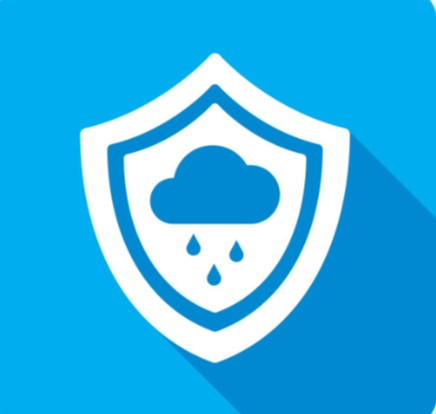
Chuvas intensas causam enchentes e alagamentos,
colocando vidas em risco e provocando prejuízos
para comunidades vulneráveis.
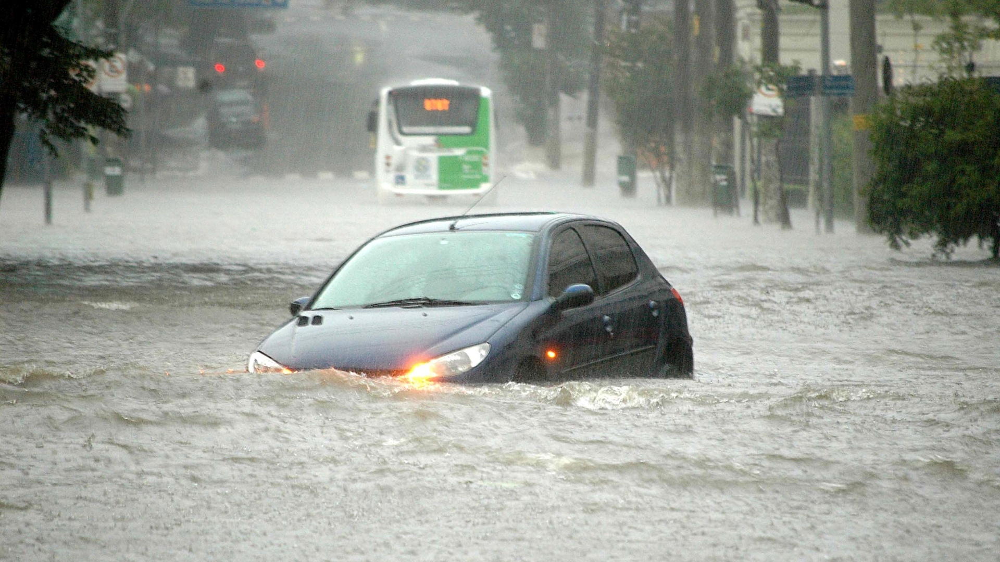
O projeto utiliza sensores de água e câmeras para monitorar chuvas e identificar possíveis enchentes em tempo real.
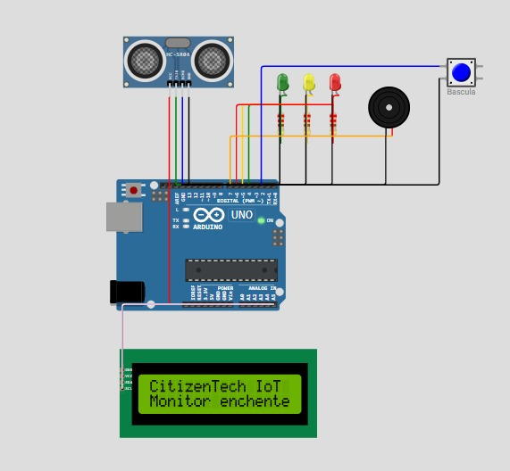
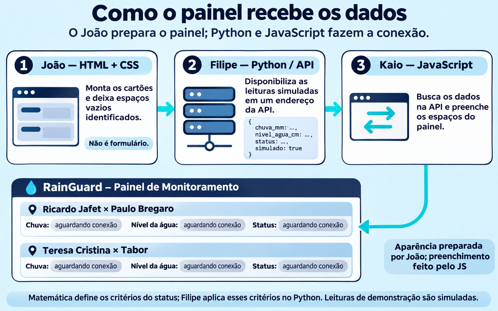
Fornecer alertas antecipados sobre enchentes, permitindo que comunidades adotem medidas preventivas e reduzam os riscos.
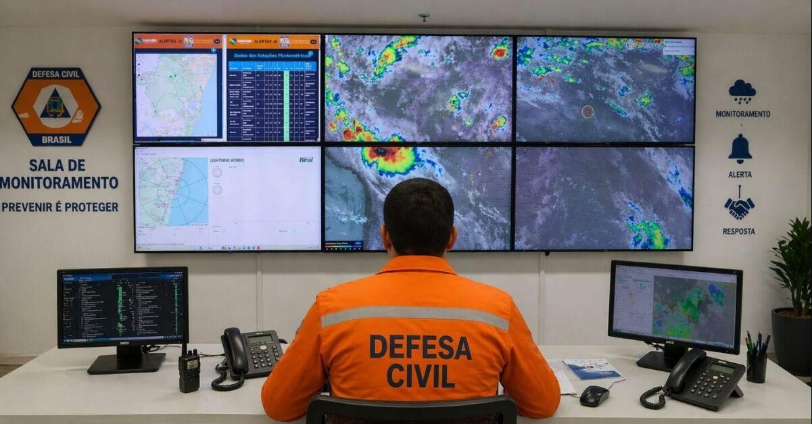
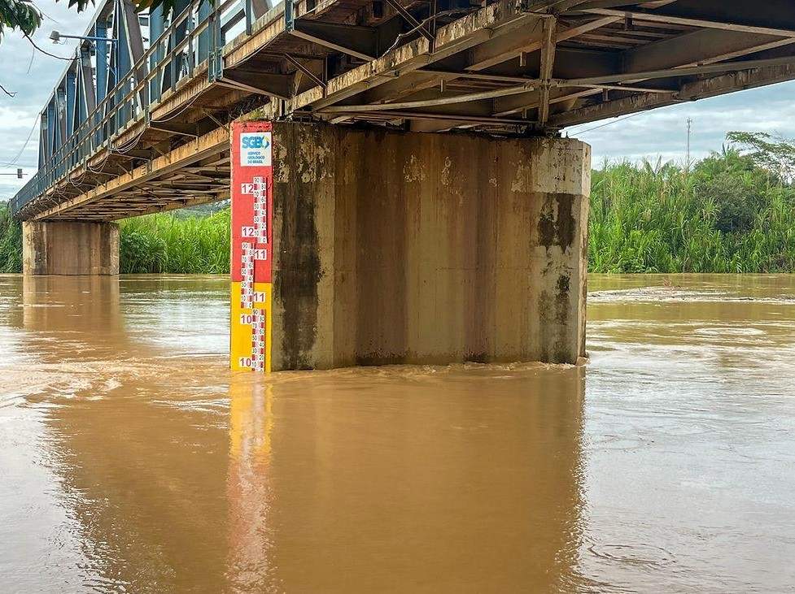
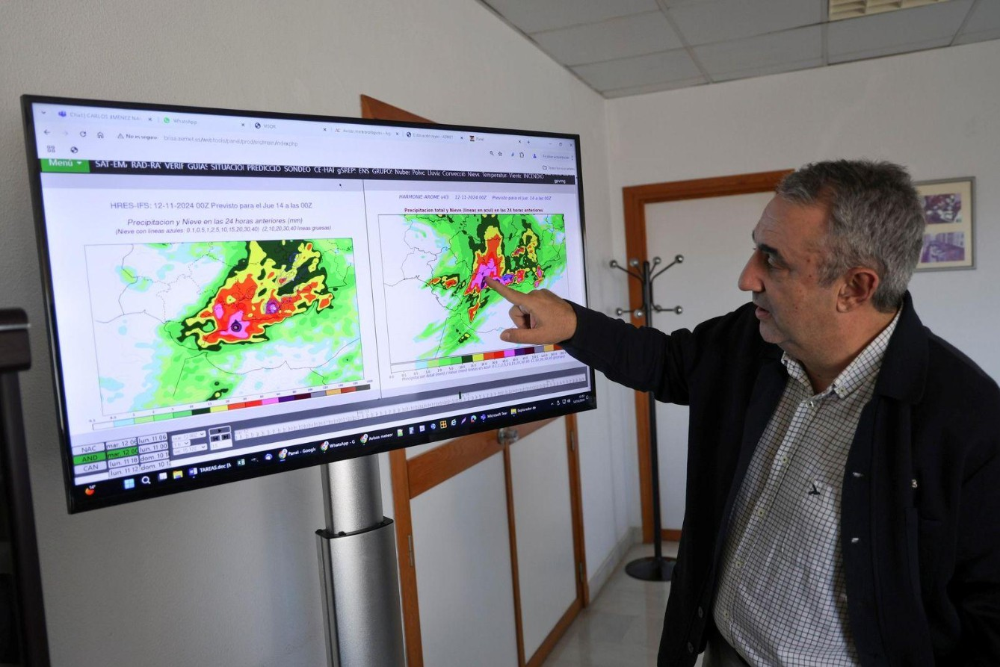
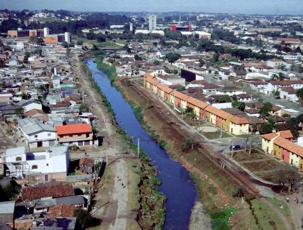
O público-alvo do projeto são comunidades vulneráveis a enchentes,
autoridades locais e organizações de resposta a desastres.
Reduzir riscos, proteger propriedades e aumentar a segurança das comunidades diante de chuvas intensas e possíveis enchentes
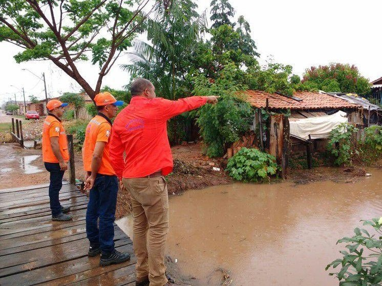
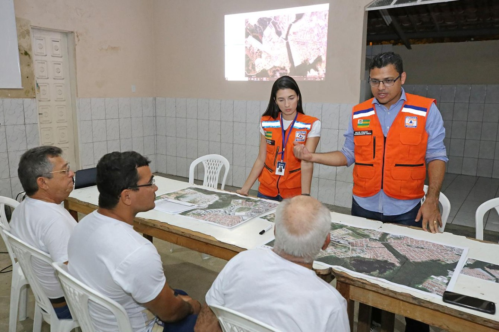
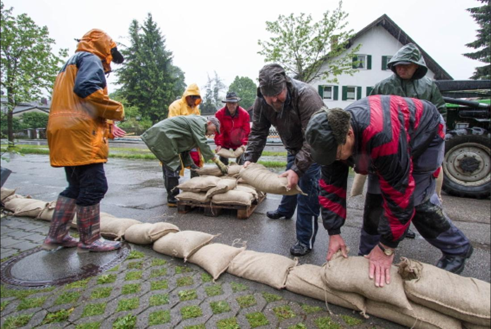
Digite um endereço. Os pontos estudados têm leituras fixas; outros recebem valores aleatórios para demonstração.
Chuva: -- mm/h
Nível da água: -- cm
Status: --
Alerta: --